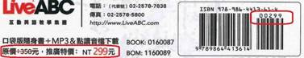
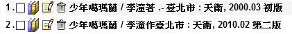

| 快速前往 | |||
|---|---|---|---|
| 一般編目注意事項 | |||
| 館員其他注意事項 | |||
| 定長欄 | Leader | ||
| 008 | 100 | 336 | 546 |
| 017 | 110 | 337 | 586 |
| 020 | 111 | 338 | 594 |
| 024 | 240 | 490 | 600-630 |
| 040 | 245 | 500 | 650 |
| 041 | 246 | 504 | 651 |
| 084 | 250 | 505 | 700-730 |
| 095 | 264 | 520 | 740 |
| 096 | 300 | 521 | 830-856 |
| 資料類型代碼表 | |||
| 取分類號 | 取著者號 | ||
新北市立圖書館中文(日文)圖書RDA分類編目規範[館員版]
【一般編目注意事項】
★圖書主要著錄來源：書名頁，若無書名頁，依序為：封面→版權頁→書背，以記載最完備著錄資料者替代之，並將來源記於附註項。
★「#」於本規範中代表半形空格。
★機讀編目格式
－採用《MARC21 Bibliographic Format》，記錄結構需符合ISO2709標準。
－字集採Unicode(UTF-8)格式
★書標內容順序
－資料類型→分類號→作者號→西元年代號→冊次號
補充：若為分傳類傳記作品，「作者號」應給予兩個，順序為「被傳者→傳者」
★編目語言
－日文資料依該書原文編目，而其餘原文未提及部分(如稽核項、附註項、標題等)以中文編目
★標點符號一律以「半形」輸入，並依循英式標點符號使用習慣
1)「,」、「.」後面空
2)「:」、「;」、「=」、「/」、「×」、「＋」、「...」前後均空
3)「( )」、「[ ]」、「--」前後均不空
4) 「.」做為音界號使用時前後不空(例：人名「哈利.波特」、出版年月「2019.06」)
★精裝、平裝
－同書名但不同精裝、平裝，需分別編兩個書目檔，精裝版需於250|b加註[精裝]，平裝版不需加註
★含附件
－同一書分別含有不同類型之附件，則分為兩個書目檔，並於250|b加註
－套編書籍若其中單冊含有附件，該冊另編一個書目，不與其他冊套編
－若有共用光碟，加工貼紙（本書含附件貼紙）僅貼在附光碟的書籍（通常為第1冊）圖書即可
★語言書
－含有學習本及解析本之語言書，須將學習本及解析本裝訂在一起，視為一本書，貼一張條碼號即可，解析本不另作附件。
★連續出版作品第1集冊次號著錄方式：
－遇到第1集時，按照書籍給予冊次（書上原本有標冊次，就給v.1；書上沒編就不用加）
－遇到採購時即為連續集數購入的，無論書上是否有寫第1集，都要加上v.1
★相同書名的書第1本出版時是單行本，但後續又出版續集的狀況：
－再出版第2集時，
第1集有編v.1 -> 合在同一筆書目套編
第1集沒編v.1 -> 分出另一個書目，若有繼續再出就依次單編
－遇到採購時即為連續集數購入的，無論書上是否有寫第1集，都要加上v.1套編
【館員其他注意事項】
★遇到西洋譯名時：
1. 先用英文全名查詢權威檔，若系統內已有該名字權威，100、700段請依系統內名字，並於500段加註「改譯」。
2. 若權威內沒有英文全名，但有英文姓氏，依系統內姓氏著錄100、700段，並於500段加註「改譯」。
3. 若權威檔內無英文全名、英文姓氏，依書上譯名著錄。
★套書同書目資料但020段資料不同
－同一套漫畫若冊數及書目資料皆與原資料相同，只差在購置前後之價格不同，020段價格修正為較貴之價格→館藏段依購置當時的價格鍵入，分館賠書則依「館藏段」之價格為依據
－同一套漫畫(書目資料相同)但有新增冊數時，書目資料需從頭補齊至新增冊數後再進行轉檔(分館同仁即可不需自行增加館藏段)；轉檔後由採編課同仁自行至系統進行二校及合併書目作業
★幣值非新臺幣，依編目當日「前1日臺灣銀行收盤即期賣出匯率」換算為新臺幣價格。
★圖書只寫【基價〇元】、【基本定價〇元】時，以該基價乘以50倍計價。
★中文贈書若無價格時，需細數面數，以1面1元計價（含空白頁）；無法取得面數者，以每冊400元計價。
★外文贈書若無價格時，需細數面數，以1面2元計價（含空白頁）；無法取得面數者，以每冊800元計價。
★若在不同批次購入同一本書，請用半形逗號分隔(逗號後不空)，依序加上批次號
範例：
594 ## |aAC-107-C2-03,AC-108-B-07,AC-108-C1-12
★純購書(中、外文)如有附件(地圖、光碟、紙型)，加工時請記得將附件另外拆下，光碟放於光碟盒，地圖、紙型放於夾鏈袋，並在書上貼附件貼紙
★書標內容順序：特藏→分類號→作者號→西元年代號→冊次號→複本號
年代號，適用如年鑑、旅遊書、法律書、參考類書，EX：旅遊書、地圖的書名有XXXX年版
【定長欄位】
定長欄位是指機讀目錄格式中長度固定的欄位。只有已定義的資料碼可鍵入定長欄位。定長欄位的目的在於協助系統檢索及資料處理。包括：紀錄標示(Leader)、006、007、008。
★紀錄標示(Leader) (NR)
紀錄標示(Leader)出現在每一紀錄的最前面，不含欄號、指標及分欄。固定長度24位，包括紀錄長度、紀錄性質、紀錄類型、書目性質、著錄依據及著錄層次、記述編目格式、層次等級等項目。此欄位由數字或字母組成，屬於MARC機讀紀錄結構的一部分，提供對紀錄處理的必要參數。
例如：某本書的紀錄標示(Leader)為
00902nam a2200241Ii 450
位址0~4：由程式自動產生。(如：00902)
位址 8 ：空格
位址 9 ：此位址之資料由CMARC之100/26-29轉入。
位址10：指標長度，內容為”2”。
位址11：分欄識別長度，內容為”2”。
位址12~16：資料基位，佔5位址，由程式自動產生。(如：00241)
位址19：空格。
位址20：欄長位數，內容為”4”。
位址21：首字位址，內容為”5”。
位址22：執行定義部分長度，內容為”0”。
位址23：空格。
Leader/05紀錄性質(Record status) |
c 修正過之紀錄(Corrected or revised) |
Leader/06紀錄類型(Type of record) |
a 文字資料(Language material) |
Leader/07書目性質(Bibliographic level) |
|
m 圖書式資料(單行本)(Monograph / Item) |
|
Leader/17著錄依據及層次(Encoding level) |
I OCLC完整紀錄(線上上傳)(Full-level input by OCLC participants) |
OCLC書目紀錄代碼"I"和"K"，由OCLC會員鍵入，一般是以線上方式單筆鍵入或批次轉入。"I"是指此書目紀錄完整(full level)符合OCLC規定。
Leader/18記述編目格式(Descriptive cataloging form) |
i 包含ISBD標點符號(ISBD Punctuation included) |
| 001 照錄訂購明細清單的MID |
| 編目時須將「有訂購明細清單MID」的檔案與「無訂購明細清單MID」的檔案分開儲存 |
★008定長資料—一般性資料（NR）
欄位008，共40位址(0~39)，用來描述書目資源的內容特性。欄位008的資料單元和結構由書目紀錄類型(Leader/06)和書目性質(Leader/07)來決定。
例如：某一本書008如右：201013s2020 ch ab
b 000 j chi d
位址0~5：資料輸入日期，如：201013表示2020年10月13日。
位址6：出版情況，佔1位址。
位址7~14：出版年，佔8位址。
位址15~17：出版地區或出版國別，佔3位址。
位址18~34：依據Leader06與07之內容加以判斷而分類的紀錄類型。
位址35~37：作品語文，如chi代表中文。
位址38：修正紀錄代碼，空白表示未修正。
位址39：編目來源，說明書目紀錄原始編目機構。
008/00-05輸入日期(Date entered on file) |
| 共六碼，如121005，指2012年10月5日 |
★著錄機關給定的轉檔時間
008/06出版情況(Type of Date / Publication Status) |
m 多出版年(Multiple dates) |
★多冊圖書仍繼續出版或經數年才出版完畢（如不同時間出版的成套漫畫、小說）選用ｍ
★其他皆選用ｓ
008/07-10出版年1(Date l) |
| ◎著錄西元出版年，若不確定年份，不確定之部分用「u」取代，如20uu ◎需與264段之分欄c對應。 |
008/11-14出版年2(Date 2) |
| 若多冊圖書仍繼續出版，著錄「9999」，已完結則著錄完結西元年 其餘狀況空白 |
008/15-17出版地區(Place of publication, production, or execution) |
[xx#]無出版地或出版地不確定(No place, unknown, or undetermined) |
例：ch 中華民國；cc 中華人民共和國(包括香港及澳門)；ja 日本
008/18-21插圖(Illustrations) |
| 依書籍內容選用： # 無插圖(No illustrations) |
008/22適用對象(Target audience) |
a 學前兒童，0-5歲(Preschool) |
★若書上有適讀年齡，依年齡段選用
★若書上無建議，依內容判斷給予
008/23載體形式(Form of item) |
# 非下列形式(None of the following) |
008/24-27內容特性(Nature of contents) |
| 依書籍內容選用： # 內容無特殊特性(No specified nature of contents) |
★若圖書內含參考書目資料，須著錄b，需與504參考書目對照。
| 008/28政府出版品(Government publication) |
依書籍出版者選用： |
★有政府出版品號碼（GPN）的書籍請依出版單位選用（公立大學出版社之作品應視為政府出版品）
008/29會議出版品(Conference publication) |
0 非會議出版品(Not a conference publication) |
008/30紀念文集(Festschrift) |
0 非紀念文集(Not a festschrift) |
| 008/31索引(Index) |
0 不含索引(No index) |
◎指作品本身之索引，需與500一般註對照。
008/33文學體裁(Literary form) |
0 非小說(不再細分)(Not fiction (not further specified)) |
★先區分是否為文學作品，非文學作品皆選0
★文學作品只分出短篇故事j，其他文學作品都入1
| 008/34傳記(Biography) |
# 非傳記作品(No biographical material) |
008/35-37作品語文(Language) |
| chi 中文 |
★出版品主要使用何種語言呈現
008/39編目來源(Catalogingsource) |
| d 其他(Other) |
【變長欄】
| 017版權或送存號(Copyright or Legal Deposit Number)(R) |
指標1 指標2前導用語顯示(Display constant controller) |
分欄 |
◎中華民國政府出版品統一編號原12碼，自民國90年起改為10碼。
◎同時有一套及單本之政府出版品統一編號，則各單本及整套之統一編號「均須著錄」。
★政府出版品統一編號(GPN)著錄於此，來源代碼為rocgpt
例：017 #8 |aGPN編號|2rocgpt
| 020國際標準書號(International Standard Book Number)(R) |
| 指標1 指標2 |
| 分欄 |
例：
單行本
020 ## |a9789863873419|q(平裝) : |cNT$380
套書，每冊有ISBN
020 ## |a9789571102382|q(一套 ; |q精裝) : |cNT$700
020 ## |a9789571102399|q(上冊 ; |q精裝) : |cNT$500
020 ## |a9789571102405|q(下冊 ; |q精裝) : |cNT$200
套書，單組ISBN
020 ## |a9786267376621|q(一套 ; |q平裝) : |cNT$1850
020 ## |q(上冊 ; |q平裝) : |cNT$617
020 ## |q(中冊 ; |q平裝) : |cNT$617
020 ## |q(下冊 ; |q平裝) : |cNT$616
|a國際標準書號
★若有10碼及13碼ISBN，僅需登錄13碼ISBN即可
★僅有10碼，照錄
★無ISBN書籍，仍需著錄|q、|c資訊，例：020 ## |q(平裝) : |cNT$250
◎多冊書編目時（通常單冊沒有各別書名及作者），各單本及整套之ISBN均須著錄。
|c價格與相關資訊
★依書籍上印刷新臺幣定價為主
★書籍上若有特價，須如下圖印刷在書上才可依特價著錄；若以貼紙黏貼特價，仍以定價著錄

★僅有套書價格無單冊價格，依套書價格除以冊數，若除不盡，將餘數自第一冊依次加1。
例1：一套699元，第一冊350元，第二冊349元。
例2：一套1250元，第一冊313元，第二冊313元，第三冊312元，第四冊312元。
★幣值非新臺幣，依機關提供採購明細表著錄。
|q限定資訊
★著錄裝訂方式：平裝、精裝、軟精裝、經摺裝等
★著錄所含附件：平裝附紙型、平裝附地圖、平裝附手冊、平裝附光碟等
★著錄套書冊次：照錄壹、上、上冊、卷一、第1冊等（漫畫除外，漫畫集數皆轉換為阿拉伯數字「第O冊」）
★先查館藏，同書名但不同裝訂方式，或不同附件，則建置兩筆書目資料
|z 取消的或無效的ISBN
★ToRead：系統無法搜尋此段，改為另外著錄一行020段
例：9781234567897錯誤，正確應為9789869767736，著錄：
020 ## |a9789869767736|q(平裝) : |cNT$340
020 ## |a9781234567897
500 ## |a封底ISBN誤植為9781234567897
★Miracle：可正常使用
例：9781234567897錯誤，正確應為9789869767736，著錄：
020 ## |a9789869767736|q(平裝) : |cNT$340|z9781234567897
500 ## |a封底ISBN誤植為9781234567897
| 024其他標準識別號(Other Standard Identifier)(R) |
| 指標1標準識別號類型(Type of standard number or code) 指標2掃描與資料上顯示的識別碼有無差異(Difference indicator) |
| 分欄 |
★024僅著錄|a商品條碼及|q冊次
★關於裝訂方式、價格仍著錄於020段
例：
單行本只有商品條碼時：
020 ## |q(平裝) : |cNT$250
024 3# |a4711111111111
單行本同時有ISBN及商品條碼時：
020 ## |a9789869767736|q(平裝) : |cNT$340
024 3# |a4711111111111
套書同時有ISBN及商品條碼，且分冊次時：
020 ## |a9789869767736|q(第1冊 ; |q平裝) : |cNT$340
024 3# |a4711111111111|q(第1冊)
| 040編目來源(Cataloging source)(NR) |
| 指標1 指標2 |
| 分欄 |
◎欄位040著錄編目及修正書目紀錄的機構，多數書目紀錄的|a和|c是同一機構。
新北市立圖書館代碼：TWTCL
◎|b編目語文代碼：chi表示用中文來編目。
◎|e編目規則代碼：rda表示「RDA編目規則」。
中文圖書輸入：
040 ## |aTWTCL|bchi|cTWTCL|erda
| 041語文代碼(Language code)(R) |
| 指標1譯文說明(Translation indication) 指標2代碼來源(Source of code) |
| 分欄 |
◎本欄用於1.作品內容有數種語言 2.主要內容是翻譯作品 3.內容摘要、目次或附件的語言與正文不同。通常041與546欄一起使用。
◎欄位041需配合欄位008/35~37著錄。
★出版品主要內容的語文著錄於|a，翻譯作品原文著錄於|h
範例1：若作品譯自英文，著錄：
041 1# |achi|heng
範例2：若主要內容有一種以上語文，例如中英對照，著錄：
041 0# |achi|aeng
546 ## |中英對照
範例3：若作品譯自英文，且為中英對照，著錄：
041 1# |achi|aeng|heng
546 ## |中英對照
★出版品的翻譯來源若亦為翻譯作品，則該翻譯作品語言著錄於|k，最原始的作品語文著錄於|h
範例：若中文作品譯自英文版，但英文版是從原始語文版本法文翻譯而來，著錄：
041 1# |achi|hfre|keng
| 082杜威十進分類索書號(Dewey Decimal Classification Number)(R) |
| 指標1 版本資訊(Type of edition) 指標2 索書號來源(Source of classification number) |
| 分欄 |
|a著錄分類號
★外文書(中文書、日文書以外皆屬之，如西文、韓文、東南亞語文等)適用：DDC 23版
★以作者卒年為主
範例：
082 0 |a823.92|bR884|223
100 1 |aRowling, J. K., |d1965-.|4aut
(分類號複分請依作者卒年，在世作者取最新年代，不用生年取)
|b著錄作者號
採用克特號。
★取克特號小工具：https://marc21-akaru-studio.neocities.org/CutterTable
東南亞作者依各國慣例，書上印刷有的是名在前，著錄時應一律以姓取號。
★泰文作者：書上印刷為名在前，姓在後，應先至此網站翻譯，並以姓取號。
如มณีจันท์，翻譯之英文為mani，故作者號為M278。
★馬來西亞文作者：書上印刷為姓在前，名在後。如Rose Harissa，作者號為R796。
★土耳其文作者：書上印刷為姓在前，名在後。
★韓文作者：書上印刷為姓在前，名在後。請用此網站將作者名翻譯成英文：
如김영하翻譯之英文為Kim, Yeong ha，故作者號為K49。
★緬甸文：參考緬英字典。
★印尼文：書上印刷為名在前，姓在後。
★越文：書上印刷為姓在前，名在後。
★德文：書上印刷為名在前，姓在後。
★匈牙利文：書上印刷為姓在前，名在後。
★菲律賓文：書上印刷為名在前，姓在後。
★柬埔寨文：書上印刷為姓在前，名在後。利用Google翻譯取羅馬拼音後再取克特號。
|2輸入23 (表示「23版」)
★若書籍有冊次，請在作者號後加註冊次號(v.)，如【A147 v.1】；若含有多部曲之部冊，部曲與部冊間用冒號，如二部曲第一冊為【A147 v.2:1】
★單編書籍有冊次，請直接加該冊冊次即可；套編書籍未完結前請加v.1-，已完結請加起始冊次，如該套五冊請著錄v.1-v.5
| 084其他分類號碼(Other Classification Number)(R) |
| 指標1 指標2 |
| 分欄 |
|a著錄分類號
★中文書、日文書適用：中文圖書分類法2007年版
|b著錄作者號
★五筆檢字小工具：https://marc21-akaru-studio.neocities.org/FiveCODE
★採用五筆檢字法，以《中西目錄排檢法與作者號碼表》編製內容為準，若其缺字則依國家圖書館首尾五筆著者號查詢系統(http://catapp.ncl.edu.tw/five/index.php)為準。
|2輸入ncsclt (表示「中文圖書分類法」)
★若書籍有冊次，請在作者號後加註冊次號(v.)，如【8965 v.1】；若含有多部曲之部冊，部曲與部冊間用冒號，如二部曲第一冊為【8965 v.2:1】
★單編書籍有冊次，請直接加該冊冊次即可；套編書籍未完結前請加v.1-，已完結請加起始冊次，如該套五冊請著錄v.1-v.5
| 095 館藏欄位-1 |
| 指標1 指標2 |
| 分欄 |
|a輸入NTCL
|b輸入館藏地代碼，請查閱「新北市立圖書館書目檔館藏地代碼表」
例如：|bTBJUN →表示總館兒童室
|c輸入條碼號 →例如：|cA0000001
|d輸入分類號 →例如：|d874.57
|e輸入作者號 →例如：|e8574
|l圖書如分多冊(卷)出版，輸入卷冊次號，格式為【v.1】、【v.2:3】（v為小寫）；單行本書籍可 省略
|m輸入價格，須為純數字，不可有國字或英文或其他符號 例如：|m300 →定價300元
|n記錄館員備註(採購批次)，格式為【採購來源-民國年-語種及項次-批次】
|s輸入屬於書籍本體或附件→例如：|s本體(表示所有非附件的館藏)
|t中文、日文圖書輸入CCL
|z依據徵集來源填寫「採購」、「贈送」、「交換」 例如：|z採購(表示為採購書)
|p輸入資料類型代碼（需與系統設定相同）→例如：|pBook (表示中文圖書)
|8輸入館藏條碼號（不可省略）
範例：
095 ## |aNTCL|bTBMUL|cA9999999|d709|eC223|lv.4|m350|nAC-108-MF-01|s本體|tCCL|z採購|pBook|8A9999999
| 096館藏欄位-2 |
| 指標1 指標2 |
| 分欄(僅列常用的，有效的分欄) |
|8輸入條碼號（不可省略）
|a輸入流通類別代碼（需與系統設定相同）
例如：L30（可借30天）、L7（可借7天）、R（不外借）
|x中文、日文輸入Five strokes、西文輸入Cutter
範例：
096 ## |8A9999999|aL30|xFive strokes
| 100主要款目-個人名稱(Main Entry-Personal Name)(NR) |
|
| 指標1人名形式(Type of personal name entry element) 指標2 |
|
| 分欄(僅列常用的，有效的分欄) |
◎當個人姓名是一書目紀錄的主要款目或主要檢索點時，應用欄位100著錄此個人名稱。欄位100的款目，應取自權威檔。人名標目之擇定，依序以個人作品中最常用者、文獻中最常用者、個人最近使用者為主。
◎本欄所載之著者為作品之創作者，如書籍之作者（含編著者），樂曲之作曲者；如無主要作者，欄位100著錄主要款目或主要檢核點(例如該書僅有黃志明主編，黃志明即著錄於100，不著錄於700)，選擇順序為：譯者、改寫、文字編輯/主編、總編輯、編輯、責任編輯、書名。以題名為主要款目時，題名著錄於130，本欄省略。本欄與欄位 110 不能同時記載。
|a著錄作者名
★中文：姓名放在同一分欄→例： |a林語堂
★作者名稱中法師、牧師、居士不需取號，但若是出家人(佛教)則需冠「釋」姓
範例1：
100 0# |a行雲|4aut
245 10 |a〇〇〇 / |c行雲居士著
範例2：
100 1# |a釋星雲|4aut
245 10 |a〇〇〇 / |c星雲大師著
範例3：
100 1# |a蕭平實|4aut
245 10 |a〇〇〇 / |c平實居士著
◎外國著者的著錄方式
1.基本著錄規則：
(1)遇西文人名時，請確實查核是否有已建立的權威檔。
(2)以著者姓氏的中文譯名當檢索款目，須找出正確的譯名。
2.選擇譯名的順序：
(1)查詢電腦權威檔。
(2)查詢電腦書目檔著者項。
(3)電腦書目檔及權威檔均無時：
A.依原件著錄。
B.原件未記載時，依中央通訊社之標準譯名錄。
C.譯名錄亦無時，參考其它圖書館譯名或由編目員自取（參考OCLC WorldCat）。
★簡體書外國作者中譯依臺灣慣用翻譯輸入
★簡體字著者，以正體字取著者號（100段著錄正體字），245照錄簡體字
★特殊作者
範例：
100 0# |a達賴喇嘛|b十四世|q(Dalai Lama XIV), |d1935-|4aut
100 0# |a宗薩欽哲|c仁波切|q(Dzongsar Khyentse Rinpoche)|4aut
100 1# |a蘇菲亞|c(Sophia)|4aut
|c可放西洋作者原文名，或作者專業領域
★須加圓括弧
★可放英文名
範例1：
100 1# |a莫札特|c(Mozart, Wolfgang Amadeus)|4cmp
範例2，作者專業領域：
100 1# |a王文華|c(兒童文學), |d1966-|4aut
100 1# |a王文華|c(化學)|4aut
100 1# |a王文華|c(文學), |d1967-|4aut
|q可著錄縮寫全稱
★須加圓括弧
★可放英文名簡寫的全稱
範例：
100 1# |aEdwards, F. G.|q(Fobert Geoffrey)|4aut
|d著錄生卒年
★前以半形逗點( , )帶出
範例：
100 1# |a柴可夫斯基|c(Tchaikovsky, Peter Ilyich), |d1840-1893|4cmp
|4相關職責代碼
★用來記述作品與人名的關係，如：著者(author)→aut、作曲者(composer)→cmp、藝術家(artist)→art等。代碼應取自RDA附錄I(I.2.1)內列出的代碼。
參考Relator Code and Term List網頁
https://www.loc.gov/marc/relators/relaterm.html
範例：
100 1# |a王文華|c(兒童文學), |d1966-|4aut
100 1# |a柴可夫斯基|c(Tchaikovsky, Peter Ilyich), |d1840-1893|4cmp
★若個人負多重職責，可重複使用分欄|4著錄不同職責。
範例：
245 10 |a張曼娟讀王爾德 / |c王爾德(Oscar Wilde)原著 ; 張曼娟編譯/導讀
700 1# |a張曼娟|4edt|4trl|4wac
| 110主要款目-團體名稱(Main Entry-Corporate Name)(NR) |
|
| 指標1團體名稱形式(Type of corporate name element) 指標2 |
|
| 分欄 |
◎本欄記載作品之團體主要著者，如以題名為主要款目時，本欄省略。本欄與欄位100不能同時記載。
◎本欄需做團體名稱權威檔，並依權威檔建立之標目著錄。
★如無主要作者，欄位110著錄主要款目或主要檢核點(例如該書僅有廣文編輯部主編，廣文編輯部即著錄於110，不著錄於710) 選擇順序為：譯者、改寫、文字編輯/主編、總編輯、編輯、責任編輯、書名
★以機關全名著錄；若非本國政府單位，須於|a加上國名
範例：
110 1# |a美國|b能源部|4edt
範例：
110 1# |a臺北市|b教育局|4aut
範例：
110 2# |a石門水庫建設委員會|4edt
範例：
110 2# |a幼福文化事業股份有限公司|b編輯部|4edt
245 10 |a〇〇〇 / |c幼福編輯部編著
★團體作者有外文原文名時，以圓括弧直接加註在中文名後
110 2# |a美國國家地理學會(National Geographic Society)|4edt
★團體作者有列個別作者，另外在500段註明【個別作者為〇〇〇,〇〇〇】再貼700
110 2# |atupera tupera(ツペラ ツペラ)|4aut
500 ## |atupera tupera個別作者為龜山達矢, 中川敦子
700 1# |a亀山達矢, |d1976-|4aut
700 1# |a中川敦子, |d1978-|4aut
| 111主要款目－會議名稱（Main Entry-Meeting Name）(NR) |
| 指標1會議名稱形式 指標2 |
| 分欄 |
◎當會議是一書目紀錄的主要款目或主要檢索點時，用111著錄此會議名稱。若此會議附屬於一機構，應以該機構為標目主體 (|a)，著錄於欄位110 。
◎會議紀錄、報告或論文集，應立會議名稱團體標目，會議屆次、會議舉行時間、會議地點依次加註於名稱之後，置於圓括弧內；會議屆次、時間、地點間，以冒號相隔。
◎會議之時間僅記年份。如會議跨二個年份舉行，記載其起訖年。
◎會議地點記載於年份之後。會議如係在教育、文化機構內舉行，記載機構名稱。會議名稱如已包含舉行之地點，不必重複記載地點。
◎如標目可適用於同一會議不同屆次，但會議時間及地點不同，標目後毋需加屆次、時間、地點，若地點相同，仍需記載。
| 240劃一題名(Uniform Title)(NR) |
| 指標1是否列印或顯示(Uniform title printed or displayed) 指標2 |
| 分欄 |
★可放置翻譯作品之原題名，|a放原文題名、|l放書籍目前被翻譯的語文。
★500段著錄「譯自 : 原題名」
範例：
240 10 |aHarry Potter and the chamber of secrets. |l中文
500 ## |a譯自 : Harry Potter and the chamber of secrets
★若翻譯原文有副題名，放於246段
範例：
240 10 |aMathematics. |l中文
246 1# |i原文副題名 : |athe man-made universe
500 ## |a譯自 : Mathematics : the man-made universe
| 245題名及著者敘述項(Title Statement)(NR) |
| 指標1題名附加款目(Title added entry) |
| 分欄 |
◎正題名的著錄方式
1.依其出現在主要著錄來源的形式（包括遣詞用字、符號、標點、數字、國語注音符號、羅馬拼音、或其他拼音符號及夾用外文者）照錄，不要自行省略或是加字。
★特例：若題名出現叉號（無論用╳×ＸｘXx表示），一律以半形小寫x（前後不空）取代
範例：捷運╳殭屍
245 10 |a捷運x殭屍
2.書名中如果包含著者的姓名或出版者經銷者的名稱等等，均應視為書名的一部分，完全按照出現的形式著錄。而如果書名單獨只是一個人名或是團體名，則這樣的名稱亦視為一完整書名，僅須依照出現的形式著錄即可。
3.若一種圖書，包含若干個作品，而有一個概括的書名，此即為共同書名，著錄時以共同書名為正題名，個別作品的書名記於內容註。
★若為合刊且無合刊名，做法如下：
範例1： →同著者
245 10 |a人間詞 ; |b人間詞話 / |c王國維著
700 12 |a王國維|t人間詞話|4aut
245 10 |a南方田園紳士 : 劉啟祥的繪畫人生 ; |b勤奮的南方鬥士 : 莊世和的繪畫人生 / |c洪金禪文 ; 達姆圖
700 12 |a洪金禪|t勤奮的南方鬥士 : 莊世和的繪畫人生|4aut
範例2： →不同著者
100 1# |a王智表|4aut
245 10 |a佛教的科學觀 / |c王智表著. 一個科學者研究佛經的報告 / 王小徐著
264 30 |a一個科學者研究佛經的報告
700 12 |a王小徐|t一個科學者研究佛經的報告|4aut
4.正題名之冠有「欽定」、「增補」、「重修」、「圖解」、「最新」等字樣者，依原題字樣著錄， 並以省略此類字樣之題名另立檢索款目。
範例：
245 10 |a最新英語讀本
246 30 |a英語讀本
5.主要著錄來源不論正體字或簡體字，245欄題名及及著者敘述項皆依照錄原則著錄。如遇簡體字，245 欄題名項除照錄簡體字外，為便於識別及檢索，再於246 欄以正體字著錄。245 欄題名項以外各欄，仍以正體字為主。
範例：
245 10 |a周汝昌校订批点本 : |b石头记 / |c周汝昌著
246 33 |a周汝昌校訂批點本 : |b石頭記
6.台、臺二字題名項著錄之原則是：依書照錄。
◎並列題名的著錄方式
1.主要著錄來源載有與正題名不同語文之其他題名或符號，視為並列題名，依照主要著錄來源所載之順序著錄，並列題名前冠以等號「=」。
2.並列題名非得自主要著錄來源 如：封面、書背、內容等則著錄於欄位246。
3.翻譯作品著錄於240者，245不用以等號「=」著錄外文原名
◎副題名的著錄方式
副題名指除正題名外，尚有對正題名作解釋性補充說明的書名，通常印在書名頁上，所用字體比較小，著錄時記在正題名之後，並以冒號「:」隔開。
◎著者敘述
1.依作品的主要著錄來源著錄，著作方式記於著者名稱之後，著者敘述非得自主要著錄來源者，加方括弧。
2.著作方式 如撰、編、輯 等 相同之著者名稱間以逗點「,」隔開，不同著作方式以分號「;」隔開。
3.同一著作方式的著者，在三人（含三人）以下，以逗點(, )分隔；超過三人時，只須著錄第一人，並加「[及其他OO位]」字樣，於700段著錄其他人，例：
245 10 |a禁止酷刑公約研討會論文集與會議實錄. |n2019年 / |c鄧衍森[及其他4位]著
700 1# |a劉嘉發|4aut
700 1# |a孟維德|4aut
700 1# |a黃翠紋|4aut
700 1# |a章光明|4aut
★不同職責的人數分開計算，若超過3人亦在該職責第1人後加「[及其他OO位]」字樣，於700段著錄其他人，例：
245 10 |a雨停出來走走 = |bOut of your blue / |c蘇文劭故事. 歌 ; 余韋呈[及其他4位]繪
700 1# |a余韋呈|4ill
700 1# |a張薰晏|4ill
700 1# |a吳箏|4ill
700 1# |a徐丹語|4ill
700 1# |aLu, Chita|4ill
4.著者之頭銜、學位、職位等均不必著錄。但省略後有礙辨識者，仍照錄之 。
5.作品所題著者姓名若含中國朝代名稱時，照原題著錄，置於姓名之前，加圓括弧。
6.作品所題外國著者原名或僅載中文譯名者，均依原題著錄；若同時載有著者外文原名及其中文譯名者，則原名著錄於中文譯名後，並加圓括弧。
★以題名為主要款目時，指標1選擇0
★有編次、編次名及並列題名時的順序：|a正題名. |n編次, |p編次名 = |b並列題名 / |cOO
有副題名及並列題名時的順序：|a正題名 : |b副題名 = 並列題名 / |cOO
範例：
245 10 |a妖怪公館の新房客. |n1, |p學園Monsters = |bResidence of monsters / |c藍旗左衽著 ; 謖繪圖
245 10 |a永恆的凝望 : |b天才閃耀的時代 = Eternal gaze / |c謝哲青著
|a著錄正題名
|b用於並列題名或副題名
|n以數字或字母標示出版品的分部時使用
★用「圓點」(.)分隔。
★「旅遊書（指定期出版）」、「地圖（指整本都是地圖）」的書名若有XXXX年版要著錄
★如遇羅馬數字，以英文字母I、V、X拼寫，不要用符號表打Ⅲ、Ⅷ、Ⅸ
範例：
245 10 |a東京攻略完全制霸. |n2020
245 10 |a希臘人的故事. |nIII
|p以名稱標示出版品的分部時使用
★編次名稱前面是編次|n用「逗點」( , )隔開
245 10 |a銃皇無盡的法夫納. |nIX, |p蔚藍之契
★編次名稱前面是題名，則用「圓點」( . )
245 10 |a電波少女與錢仙大人番外篇. |p信樂大叔
|c描述不同職責的著作者
★|c前以半形/帶出（/前後皆應留空格），例：
245 10 |a莫斯科紳士 / |c亞莫爾.托歐斯(Amor Towles)著 ; 李靜宜譯
★按書上照錄(如：【…】【、】【。】【文】【作】【譯】【繪】等)
例如：
書名頁：王小徐著，即照錄「王小徐著」；
書名頁：王小徐作，即照錄「王小徐作」；
書名頁：王小徐繪，即照錄「王小徐繪」……
書名頁無明確【文】【作】【譯】【繪】等字詞，僅標示【作者：王小徐】或【譯者：王小徐】……等，則依下列統一詞彙著錄：
作者→「作」；繪者→「繪」；翻譯→「譯」；譯者→「譯」；繪圖→「繪」；食譜作者→「王小徐食譜作者」
| 246其他題名(Varying Form of Title)(R) |
| 指標1附註/題名附加款目控制碼(Note/added entry controller) 指標2題名類型(Type of tifle) |
| 分欄 |
◎用來著錄在編資源的其他題名。此其他題名出現在主要錄來源以外與正題名不同的題名。若一出版品有其他版本（例：初版，修訂版）且題名不同，應著錄於欄位246。
範例：
245 00 |a宜蘭度小月的美味 / |c陳兆麟作
246 1# |i原書名 : |a海鮮總動員
|i 具體說明題名類型或出處
★用於246指標2沒有提到的題名類型，著錄方式為246 1# |i題名類型或出處 : |a
範例1：
245 00 |a生活妙點子1000招 / |c學院社編著 ; 王毓純譯
246 1# |i另有譯名 : |a超省錢1000招
範例2：
245 00 |a波特女士
246 1# |i題名誤印 : |a波特女王
範例3：
246 1# |i版權頁題名 : |a癌症的雞尾酒療法
範例4：
246 1# |i版權頁英文題名 : |aTaiwan
範例5：
246 1# |i原文副題名 : |aそれでは息が詰まるので
指標2
# 未標示題名類型
★提供非指標2的0-8類型時使用，指標1選擇1，指標2選擇#，分欄用i帶出說明文字，範例詳上
0 部分題名
★是正題名的一部分，且這部分題名被讀者查詢檢索。
★|a、|b、|p的全部或部分都可視情況著錄
範例：正題名的一部分
245 10 |a最新英語讀本
246 30 |a英語讀本
範例：副題名
245 10 |a教出乖巧好爸媽 : |b父母教養手冊
246 30 |a父母教養手冊
範例：編次名稱
245 10 |a來自清水的孩子. |n1, |p愛讀冊的少年
246 30 |a愛讀冊的少年
1 並列題名
★題名以兩種以上語言出現在書名頁上，應在245以等號( = )引出該其他語言題名，並在246 31 著錄
範例：
245 10 |a2011年國際圖書館專業館員研習班 : |b漢學研究資源及服務研習手冊 = 2011 International Workshop for Professional Librarians : Sinological Resources and Services Handbook
246 31 |a2011 International Workshop for Professional Librarians : |bSinological Resources and Services Handbook
★若並列題名不出現在欄位245中，應用246 1# |i來說明此並列題名的來源
範例：
245 00 |aKonferenzberichte. |pKernforschung Kerntechnik = |bConference papers. Nuclear research nuclear technology.
246 31 |aConference papers. |pNuclear research nuclear technology
246 1# |iIssue for <1991-> have English title : |aConference papers. |pNuclear research nuclear technology
★書名頁、封面、封底若有其他語言並列題名可著錄於此
★若簡體字書籍的書名頁有漢語拼音，可著錄於並列題名，指標為31
3 其他題名
★當其他指標2無法描述一題名出處，可用246 33 著錄
★提供不同書寫形式的題名，如著錄數字的轉換
★若245段之題名中有數字或日文字需轉換成國字請著錄於此
★提供中間不插入標點符號的題名，以利Webpac搜尋。若標點符號在最後面則不需另行著錄
範例：
1. &、符號、標誌等，例：
245 10 |a100の東京大人味發見
246 33 |a100個東京大人味發見
245 10 |a什ㄇㄛ不見了
246 33 |a什麼不見了
2. 字與字間有或無空格，或短線，例：
245 10 |a0-2歲寶寶想表達什麼?
246 33 |a零到二歲寶寶想表達什麼
245 10 |a不開口也能讓人心服口服的英文E-mail速記解密
245 33 |a不開口也能讓人心服口服的英文Email速記解密
245 10 |a大清 八旗軍戰爭全史
246 33 |a大清八旗軍戰爭全史
3. 數字或年份(阿拉伯數字或正楷書寫) ，例：
245 10 |a365天.明天去哪個國家? 喵
246 33 |a三百六十五天明天去哪個國家喵
4 封面題名
◎若封面題名與正題名不同，且讀者易用此封面題名做檢索時，此時應給此封面題名一檢索款目，指標2為”4”。
範例：
245 10 |a你可以輕鬆教養小孩
246 34 |a你可以輕鬆教導孩子
7 逐頁題名
★在書籍每頁頂端或底端的題名
範例：
245 10 |a馬克思畫傳 : |b馬克思誕辰200周年紀念版
246 37 |a馬克思畫傳1818-1883
8 書背題名
★出版商印在書背的題名，圖書館自行裝訂後的書背刊名不屬此類
範例：
246 10 |a戀戀中港 : |b咱的故鄉.咱的厝
246 38 |a八十六年度全國文藝季苗栗縣活動成果專輯
| 250版本項(Edition Statement)(R) |
| 指標1 指標2 |
| 分欄 |
◎在RDA編目規範下，應遵循”忠實著錄”原則，不再自行簡化版本詞語。
◎依照主要著錄來源出現的形式著錄，無論書上之版次為阿拉伯數字或國字，一律照錄，如果主要著錄來源沒有出現版本敘述，請不要 自行加上“初版”等字樣 。
◎版本名稱如原刊本、補刊本、初刊本等，均照原書所載著錄之。
★先查館藏，同書名不同版本，則建置兩筆書目資料

|a照錄版本資訊
★BOD版或POD版需著錄
250 ## |aBOD一版
|b其他資訊
★版權頁之版次外，如書名頁，封面等有特別再註明最新修訂版等則著著於分欄b，但如為2016-2017版，則著錄於245段分欄n
範例：
250 ## |a初版|b漫畫版
250 ## |a初版|b圖解版
250 ## |a初版|b電影書衣版
250 ## |a初版|b獨家電影動畫插圖版
250 ## |a初版|b[譯自原文第2版]
★同一圖書同時有精裝版、平裝版，需分為兩筆書目，且在250 |b加註[精裝]，平裝不需加註
範例：
020 ## |a9789868552302|q(精裝) : |cNT$599
245 10 |a總指揮的告白 : |b二〇〇六紅衫軍運動三週年紀念 / |c施明德著
250 ## |a初版|b[精裝]
020 ## |a9789868552319|q(平裝) : |cNT$399
245 10 |a總指揮的告白 : |b二〇〇六紅衫軍運動三週年紀念 / |c施明德著
250 ## |a初版
★同一圖書同時有不同附件形式，需分為兩筆書目，且在250 |b加註
範例：
020 ## |a9789576084928|q(精裝) : |cNT$99
245 10 |a動物園有小偷!? / |c劉思源文 ; 南君繪
250 ## |a初版
020 ## |a9789576084928|q(精裝附光碟) : |cNT$250
245 10 |a動物園有小偷!? / |c劉思源文 ; 南君繪
250 ## |a初版|b[含光碟]
| 264出版、經銷、製造與版權年相關資訊(Production, Publication, Distribution, Manufacture, and Copyright Notice)(R) |
| 指標1出版資訊順序(Sequence of statements) 指標2相關功能(Function of entity) |
| 分欄 |
◎出版地的著錄方式
1.出版地的著錄是選擇出版者所在地的縣市名稱著錄，著錄至縣市，若地區名稱非取自指定著錄來源需加方括弧。
2.出版地如為外國，宜加國名，外國地名宜以中文譯名著錄，如：美國紐約。
3.若作品無出版地之記載，著錄可能之地名於方括弧內，後加問號；如無法推測，應以國名（外國出版地）、省名著錄，若其國名、省名有疑問者，亦加問號於後。如：[美國]、[廣東省?]。
4.若出版地無法查證者，則以“[出版地不詳]”著錄之。
◎出版者的著錄方式
1.出版者(或發行者)名稱不止一個時，應選擇最前面的名稱著錄，但是排列在後面的出版者(或發行者)如果是在編目所在國家，或印刷字體顯著者，也應著錄在第一個出版者之後。
2.作品併載發行人及發行機構時，著錄發行機構即可。
3.政府出版品之出版者：依「照錄」原則著錄政府機關之全稱，惟書上未出現全稱時，依編目規則，仍以「照錄」為宜。
4.出版者或經銷者不詳，得以“ [出版者不詳]”著錄之。
5.學位論文分別以就讀學校所在地為出版地、論文撰寫為出版者，並加[ ]著錄。
◎出版年的著錄方式
1.出版日期著錄年、月，以版本項所載該版首次出版年代為出版年，若無版本敘述，則以初次發行年代著錄之，年、月中間以圓點分隔。
2.出版年均以阿拉伯數字著錄西元年。
3.作品含有數冊而其出版年不同時，須註明其最初及最後出版年；若作品仍繼續出版中，則著錄最初之出版年，加一半形橫線（-），並預留空格，俟出版完整時，再行著錄最後之出版年。
★有冊次的書，如已完結，出版年同一年，僅月份不同，著錄【年.月-月】即可；若不同年，則著錄【頭年.月-尾年.月】
★有冊次的書，如未完結，著錄【年.月-】
4.出版年之各種情況：『原則上應能顯示第一個出版年』
5.出版年一定要著錄，如果在書中查不到出版年，可以參考其他資料，或是依照編目者自己的判斷以近似的年代著錄，但是必須加上方括弧。
★出版地或出版者超過一個（共同出版），應用分號( ; )隔開著錄
範例：
264 #1 |a臺北市 : |b商周出版 ; |a臺南市 : |b臺南市政府文化局, |c2020.03
|a(出版、經銷、製造)地
★著錄至縣市
|b(出版、經銷、製造)單位
★依版權頁照錄
範例：版權頁寫全名，不縮寫
264 #1 |a臺北市 : |b時報文化出版企業股份有限公司, |c2020.02
範例：版權頁非寫全名，照錄
264 #1 |a新北市 : |b貓咪予花兒, |c2013.02
★依版權頁敘述使用指標2
★本館除經銷外，發行也使用264
#2 |a，但著錄時以發行優先，除非無發行才著錄經銷
範例：同時有出版、發行、經銷，僅著錄出版、發行
264 #1 |a臺北市 : |b麥浩斯出版, |c2020.01
264 #2 |a臺北市 : |b英屬蓋曼群島商家庭傳媒股份有限公司城邦分公司, |c2020.01
|c(出版、經銷、製造、版權)年
★僅著錄西元年月，書上是民國年，轉換成西元年→EX：2007.05
★出版年不詳且查無資料，用【20??】；出版月不詳，僅著錄出版年即可。
★版權年著錄於264 #4 |c，圖書資料在年份前要加版權符號(©)
★圖書非一刷的情況下才需著錄版權年，並應在出版、經銷、製造年後以方括弧加上刷次([〇刷])，刷次寫法照錄數字或中文
範例：
264 #1 |a臺北市 : |b遠見天下文化出版股份有限公司, |c2019.02[2刷]
264 #2 |a[新北市新莊區] : |b大和書報圖書有限公司, |c2019.02[2刷]
264 #4 |c©2018.03
範例：版權頁未註明刷次，264
#4 |c©著錄出版時間
264 #1 |a臺北市 : |b三采文化股份有限公司, |c2018.06
264 #4 |c©2018.01
| 300稽核項(Physical Description)(R) |
| 指標1 指標2 |
| 分欄 |
300 ## |a數量 : |b插圖及其他稽核項 ; |c高廣尺寸 + |e附件
範例：
300 ## |a159面 : |b彩圖 ; |c26公分 + |e1片CD-ROM
300 ## |a31面 : |b彩圖 ; |c27公分 + |e1片CD + 1片DVD
300 ## |a219面 ; |c23公分 + |e1本手冊(家長導讀手冊)
◎單冊圖書
(1)作品以正文的面數為主，正反皆印者記其「面」數。若全書之面數連貫，以載於書上最後一面數字為準，均應除去空白頁、廣告或其他與本書無關的資料面數。
(2)若正文前後之面數另計時，依書中之次序“正文前、正文、正文後”著錄，隔以逗點，面數、冊數等均以阿拉伯數字著錄之。若正文前後之面數不止一組，則各合計其面數，加方括弧。
(3) 一書若正文之面數有二組以上，或各篇章面數自為起訖，或未標面數者，應著錄為「1冊」。
◎超過一冊的作品
(1)各冊面數不論各自起訖或面數連貫，著錄其冊數即可， 不必著錄其面數。
|a記錄書籍數量，〇面或〇冊
★書中若有圖版，則圖版要另外數面數，例：【|a[8]圖版, 128面】
★一律用【冊】字，勿用【册】字
|b插圖及其他稽核細節
★配合008/18-21，著錄圖、地圖、肖像、圖表、圖版、表格等內容
◎插圖的顏色在二種以上者為彩色插圖，著錄時，應冠以“彩”字，如果插圖中只有一部分為彩色，則再冠“部分”於“彩”之前。
彩圖------ 插圖為彩色
部分彩圖----------- 插圖中包含部分彩圖
★表格著錄【表】
★圓餅圖、曲線圖、甘特圖等著錄【圖表】
★肖像及用相機拍攝的人物照著錄【像】(有人的屬之，無論是照片或是畫)
|c高廣尺寸
◎作品的高廣，以封面的長寬為準，以公分為單位，不到一公分的部分以一公分計算。
◎一般作品的高廣僅著錄高度。
◎特殊作品請著錄「高x廣」（乘號以小寫x代表，前後需留空），以下狀況為特殊作品：
1.作品的寬度超過高度。
範例：|c21 x 30公分
2.作品的寬度不及高度一半。
範例：|c20 x 9公分
3.作品的寬度及高度相等。
範例：|c20 x 20公分
|e附件
◎附於一書同時出版並且與其配合使用之附件，可於高廣之後，著錄其名稱（或包括稽核事項），中間以加號“＋”隔開
★附件判斷：所附之附件和書是否具有關聯性；需要下附件條碼號的才算附件。
◎純筆記無內容→不做附件。
◎手冊和本體沒有相連：
手冊高度和本體相同→請合訂為一冊。
手冊高度比本體矮或高→請做附件。
◎手冊和本體有相連：
手冊有壓虛線，方便撕下來→請拆下再合訂為一冊。
手冊未壓虛線，翻頁方向和本體相反→請做拆下附件。
手冊未壓虛線，翻頁方向同本體→維持原樣。
★附件為光碟時，參考書籍說明照錄
常用範例：
|e1片CD
|e1片MP3
|e1片DVD
|e1片CD-ROM
|e1片DVD-ROM
★附件為紙製品：
|e1張紙型
|e1本手冊
|e1張地圖
|e12張卡牌
★附件其他範例：
|e1張紙型 + 1片CD
|e每冊附3片CD
|e第1冊附1片CD
★超過一種附件用加號( + )隔開
300 ## |a295面 : |b圖, 表 ; |c26公分 + |e1片MP3 + 1本手冊
★其他狀況如（一個書目檔）3本書各1片MP3
300 ## |a[34]面 : |b彩圖, |c20公分 + |e每冊各1片MP3
★多書共用附件，有共用的書籍用套編呈現，請用集叢名著錄245，並用505、740註明各書書名
範例：阿羅有枝彩色筆、阿羅的童話國、阿羅房間要掛畫，3本書共用1片光碟時，3本書套編，加工方面3本書都要貼「本書含附件貼紙」
245 10 |a[圖畫書視聽之旅]阿羅有枝彩色筆 / |c克拉格特.強森(Crockett Johnson)文. 圖 ; 林良譯
300 |a3冊 : |b圖 ; |c20公分 + |e1片DVD
500 |a3書共用1片光碟
505 00 |g1, |t阿羅有枝彩色筆--|g2, |t阿羅的童話國--|g3, |t阿羅房間要掛畫
740 02 |a阿羅有枝彩色筆
740 02 |a阿羅的童話國
740 02 |a阿羅房間要掛畫
| 336內容形式(Content Type)(R) |
| 指標1 指標2 |
| 分欄 |
◎欄位336著錄資源的作品內容表現形式，用於RDA編目規範下。內容形式用語或代碼需取自特定控制詞彙表。
◎欄位336與紀錄標示( Leader/16)配合使用。
336 ## |a內容形式用語|b內容形式代碼|2rdacontent
|a內容形式用語
|b內容形式代碼
★參考Term and Code List for RDA Content Types網頁與國圖中譯
https://www.loc.gov/standards/valuelist/rdacontent.html
https://catweb.ncl.edu.tw/standard/page/30632
|2用語或代碼出處
★填寫rdacontent
|3伴隨類型
★有附件時使用，分別敘述本體和附件的內容形式
範例1，中/日文圖書含DVD附件：
336 ## |3book|a文字|btxt|2rdacontent
336 ## |3DVD|a平面動態影像|btdi|2rdacontent
範例2，西文圖書含DVD附件：
336 ## |3book|atext|btxt|2rdacontent
336 ## |3DVD|atwo-dimensional moving image|btdi|2rdacontent
★336|a、|b需照下表詞彙填入，若於此常用表內未見適用類型，請查參考網頁
| 336 |a | 336 |b | 常用類型舉例 | |
| 文字 | text | txt | 圖書 |
| 平面動態影像 | two-dimensional moving image | tdi | 影片、錄影資料 |
| 電腦程式 | computer program | cop | 作業系統、應用軟體 |
| 演奏音樂 | performed music | prm | 錄製音樂、電腦音樂 |
| 話語 | spoken word | spw | 閱讀、朗誦、演講、口述歷史紀錄、電腦語音 |
| 聲音 | sounds | snd | 自然聲音、人造聲音 |
| 靜態影像 | still image | sti | 素描、繪畫、圖表、照片、紙型、卡片 |
| 地圖影像 | cartographic image | cri | 地圖、景觀圖、地圖集、遙感影像 |
| 記譜音樂 | notated music | ntm | 樂譜 |
| 立體形式 | three-dimensional form | tdf | 雕塑、模型、自然物件、標本、全息圖、磁鐵 |
| 337媒體形式(Media Type)(R) |
| 指標1 指標2 |
| 分欄 |
◎欄位337用來著錄資源的媒體形式，此媒體是指一裝置或設備，讀者藉此來放映、觀看、閱讀等取得該資源內容，用於RDA編目規範下。媒體形式用語或代碼需取自特定控制詞彙表。
◎欄位337可取代定長欄位007/00或可與欄位007/00同時著錄。
337 ## |a媒體形式用語|b媒體形式代碼|2rdamedia
|a媒體形式用語
|b媒體形式代碼
★參考Term and Code List for RDA Media Types網頁與國圖中譯
https://www.loc.gov/standards/valuelist/rdamedia.html
https://catweb.ncl.edu.tw/standard/page/30632
|2用語或代碼出處
★填寫rdamedia
|3伴隨類型
★有附件時使用，分別敘述本體和附件的媒體形式
範例1，中/日文圖書含DVD附件：
337 ## |3book|a無媒介|bn|2rdamedia
337 ## |3DVD|a錄影|bv|2rdamedia
範例2，西文圖書含DVD附件：
337 ## |3book|aunmediated|bn|2rdamedia
337 ## |3DVD|avideo|bv|2rdamedia
★337|a、|b需照下表詞彙填入，若於此常用表內未見適用類型，請查參考網頁
| 337 |a | 337 |b | 常用類型舉例 | |
| 無媒介 | Unmediated | n | 圖書、樂譜、紙型、卡片、地圖、模型等實物 （為直接透過人的感官察覺而不需中介設備輔助的媒體） |
| 錄影 | video | v | DVD、VCD、錄影帶 |
| 電腦 | computer | c | CD-ROM、DVD-ROM、電腦磁碟片、線上資源、usb隨身碟 |
| 錄音 | audio | s | CD、MP3、黑膠唱片、錄音帶 |
| 338載體形式(Carrier Type)(R) |
| 指標1 指標2 |
| 分欄 |
◎欄位338用來著錄資源的載體形式，及存放資源的硬體或線上形式，用於RDA編目規範下。載體形式用語或代碼需取自特定控制詞彙表。
◎欄位338可取代定長欄位007/01或可與欄位007/01同時著錄。
338 ## |a載體形式用語|b載體形式代碼|2rdacarrier
|a載體形式用語
|b載體形式代碼
★參考Term and Code List for RDA Carrier Types網頁與國圖中譯
https://www.loc.gov/standards/valuelist/rdacarrier.html
https://catweb.ncl.edu.tw/standard/page/30632
|2用語或代碼出處
★填寫rdacarrier
|3伴隨類型
★有附件時使用，分別敘述本體和附件的載體形式
範例1，中/日文圖書含DVD附件：
338 ## |3book|a成冊|bnc|2rdacarrier
338 ## |3DVD|a影碟|bvd|2rdacarrier
範例2，西文圖書含DVD附件：
338 ## |3book|avolume|bnc|2rdacarrier
338 ## |3DVD|avideodisc|bvd|2rdacarrier
★338|a、|b需照下表詞彙填入，若於此常用表內未見適用類型，請查參考網頁
| 338 |a | 338 |b | 常用類型舉例 | |
| 成冊 | volume | nc | 「成冊的」圖書、手冊、樂譜、地圖 |
| 單張 | sheet | nb | 「單張的」樂譜、紙型、地圖 |
| 卡片 | card | no | 卡片 |
| 實物 | object | nr | 模型、磁鐵……等 |
| 影碟 | videodisc | vd | DVD、VCD |
| 電腦碟片 | computer disc | cd | CD-ROM、DVD-ROM |
| 線上資源 | online resource | cr | 線上資源 |
| 唱片 | audio disc | sd | CD、黑膠唱片、(存在CD裡的)MP3 |
| 490集叢項(Series Statement)(R) |
| 指標1集叢是否做為檢索款目(Series tracing policy) 1 集叢被檢索(Series traced) |
| 分欄 |
◎集叢是指集合許多性質相似或形式相同的單獨作品，具有一個總書名的套書。集叢名對於讀者而言十分具有參考價值，因此集叢名的著錄可以讓讀者在查檢上更為方便。
★照錄書背、版權頁之集叢，預行編目上的集叢不著錄
★欄位490沒有分欄n及p，若要著錄集叢編次或編次名稱，請在|a後加(. )著錄
範例：
490 1# |a中國方志叢書. 華中地方
830 #0 |a中國方志叢書. |p華中地方
★集叢名如為簡體時，則需另行著錄繁體集叢名(830亦同)
範例：
490 1# |a中国文学名著
490 1# |a中國文學名著
★並列集叢名
集叢名如同時有中文及英文時，請分別著錄中、英文集叢名(830亦同）
範例：
490 1# |a文學森林 ; |v6
490 1# |aLiterary forest ; |v6
◎作品如果同時屬於二個集叢，因此有兩個集叢名時，請分別著錄兩個集叢名。
範例：
490 1# |a張皓宸作品集 ; |v1
490 1# |a皇冠叢書 ; |v第4687種
|v 若書背、版權頁之集叢號不同，以最完整集叢號為主（如前綴有【英文】和【0】，則依此著錄）
範例：
集叢號分別為BP45、045，取BP45
490 1# |a小魯寶寶書 ; |vBP45
集叢號分別為0001、1，取0001
490 1# |aEE ; |v0001
| 500一般附註(General Note)(R) |
| 指標1 指標2 |
| 分欄 |
◎欄位500用於一般註解及書目關係，當其他5XX欄位都不適用時，用欄位500著錄說明。
◎翻譯作品或改寫的作品，應在附註項說明，其中翻譯作品以“譯自：”引出原文題名 。
◎作品的題名如果不是取自主要著錄來源，須於附註項說明其出處。
例如：500 |a題名取自封面 (取自封面)
◎與作品有關的著者敘述，如未著錄在題名及著者敘述項內，但仍有參考價值，必須加以說明時，應在附註項中註明。
245 10 |a知識的水庫 △/c 彭歌著
500 |a著者本名姚朋
◎外國著者的譯名在245欄位著者敘述項中須依作品出現的名稱著錄，而於100欄另立依權威檔已建立之名稱著錄以利檢索，此時須於附註項說 明該著者改譯之名稱，如：
100 1 |a葛羅斯 |q(Gross, C.)
245 10 |a電力系統分析 |c葛洛斯 (C Gross) 著
500 |a著者改譯葛羅斯
◎與版本有關的敘述，必要時，應註明於附註項。
245 10 |a今古學考 /|c廖平著
250 |a影印本
500 |a據民 14 年成都存古書局彙印六譯館叢書本影印
使用範例：
500 ## |a含索引
008/31為1含索引，且008/24-27無b書目時；或008/24-27有b書目，但書目集中可標頁碼時，在此註明
500 |a作者號取自〇〇
若作者號非取自主要作者應於此說明，範例：
500 |a作者號取自譯者
500 |a作者號取自第1冊譯者徐月珠
500 ## |a〇〇〇為〇〇和〇〇共用之筆名
110 2 |a安德魯斯|g(Andrews, Ilona)
500 |a伊洛娜.安德魯斯為伊洛娜.高登和安德魯.高登夫妻共用之筆名
700 1 |a高登|c(Gordon, Ilona)
700 1 |a高登|c(Gordon, Andrew)
500 ## |a附錄 : 1, 〇〇〇--2, 〇〇〇--3, 〇〇〇
3種以內附錄依次標明
500 |a附錄 : 〇〇〇等〇種
超過3種只列第一種與總數量
500 |a含附錄
散見在各章節的附錄，或書上附錄集中在最後，沒有另給標題
500 |a試題本, 解析本合訂為一冊
手冊和本體合訂為一冊時不算附件，只需在500註明
504書目註(Bibliography, Etc. Note)(R) |
| 指標1 指標2 |
| 分欄 |
◎作品包含參考書目，應著錄於欄位504。
◎008資料類型代碼欄中的內容性質代碼之b-書目，須與504欄位-參考書目對應，如著錄 504欄參考書目，則008欄-內容性質代碼須著錄b。
★索引、書目不同情形著錄方式請參此（標明頁碼"-"前後不加空格）
有索引，有書目（書目集中可標頁碼）
500 ## |a含索引
504 ## |a參考書目 : 面467-486
有索引，有書目（書目分散）
504 ## |a含參考書目及索引
有索引，無書目
500 ## |a含索引
無索引，有書目（書目集中可標頁碼）
504 ## |a參考書目 : 面467-486
無索引，有書目（書目分散）
504 ## |a含參考書目
| 505內容註(Formatted Contents Note)(R) |
| 指標1前導用語顯示(Display constant controller) 指標2內容格式層次(Levels of content designation) |
| |g 其他資料(Miscellaneous information)(R) |
◎欄位505用來註明出版品的內容，可包含著者敘述、錄音資料演奏時間、或卷册編次等
◎作品如有下列情形，應著錄505欄位：
(1)作品的書名不能明確表達其內容。
(2)作品內容包含若干篇不同性質的文章。
(3)集合許多人論著而編成的作品，若書中的每一篇作品，均註明撰述者姓名時。
★著錄505時需再著錄740段
★需要註明書名內容時，使用|g標明次序，|t著錄題名
505 00 |g1, |t地府流浪貓--|g2, |t會作詩的寵物豬
740 02 |a地府流浪貓
740 02 |a會作詩的寵物豬
★書籍內容若須著錄內容作者，另加|r著錄，並須著錄700分析款目
245 10 |a文學超圖解 : |b10頁漫畫讀完知名文學作品 / 多力亞斯工場著 ; 常純敏譯
505 00 |g1, |t人間失格 / |r太宰治--|g2, |t山月記 / |r中島敦--|g3, |t檸檬 / |r梶井基次郎
700 12 |a太宰治|t人間失格
700 12 |a中島敦|t山月記
700 12 |a梶井基次郎|t檸檬
| 520摘要、提要註(Summary, Etc.)(R) |
| 指標1前導用語顯示(Display constant controller) 指標2 |
| 分欄 |a摘要等(Summary, etc.) (NR) |
◎欄位520用來形容一出版品的內容範圍和主題。此欄位是指「正式的摘要」。非正式的摘要用欄位500。
◎錄音、錄影資料、兒童及青少年讀物、小說多提供內容摘要。
★標點符號一律以半形輸入，並依循英式標點符號使用習慣（例如逗點、句點後須加半形空格等）
| 521適用對象註(Target Audience Note)(R) |
| 指標1前導用語顯示(Display constant controller) 指標2 |
| 分欄 |
◎欄位521用來說明此出版品的讀者群。兒童及青少年出版品上多有標示閱讀年級、或閱讀年齡的資訊，可著錄於此欄位。也可著錄錄影資源或電腦遊戲內容的適用對象。
★依書上註明適用對象、年齡或適讀程度照錄
範例：
521 ## |a3歲以上親子共讀, 7歲以上自己閱讀
521 ## |a大學用書
521 ## |a限制級
→指該書目內所有書籍都是限制級
521 ## |a第1-5, 7冊為限制級
→書目內若有部分集數為限制級，應於521清楚標示
★如果書上沒有標註適讀年齡，應於008/22適用對象註明a-e即可，521不著錄
| 546語文註(Language Note)(R) |
| 指標1 指標2 |
| 分欄 |
★說明出版品正文所用之語文。此欄位應與定長欄位008/35-37和欄位041相配合。
常用範例：
546 ## |a國語注音
546 ## |a中英對照
546 ## |a部份內容為英文
546 ## |a簡體字本
546 ## |a漢語拼音
546 ## |a內容以臺文書寫
546 ## |a內容以粵文口語書寫
546 ## |a部份內容中英日法對照
546 ## |a中文泰雅族語對照
★若書內有多種語文表現形式，可使用多筆546著錄
範例：一童書既有注音又為中英對照
546 ## |a國語注音
546 ## |a中英對照
| 586得獎註(Awards Note)(R) |
| 指標1前導用語顯示(Display constant controller) 指標2 |
| 分欄 |
◎欄位586著錄出版品所得的獎項。如有數個不同獎項，著錄於個別的欄位586。
586 ## |a獎項名, 得獎年（西元）
中/日文範例：
586 ## |a波隆那國際兒童書展新人獎, 2020年
586 ## |a中國時報開卷美好生活書, 2010年
西文範例：
586 ## |aThe Newbery Medal, 2005
★入圍及商業獎不予著錄。（如【入圍2008年金鼎獎】、【Amazon年度銷售第1名】、【本屋大賞】等均不予著錄）
| 594採購批次(NR) |
| 指標1 指標2 |
| |a採編附註項 |
★為本館自訂項目，若不確定批次，請向採購人員確認
★批次號格式：AC-[採購年度]-[語言及項次]-[批次號]
範例1：
594 ## |aAC-106-C1-01
範例2，新北市圖採購之第二批東南亞文書目，依圖書語文分別著錄：
594 ## |aAC-113-THA-02
594 ## |aAC-113-VIE-02
594 ## |aAC-113-IND-02
594 ## |aAC-113-BUR-02
範例3，國圖分區資源中心第一批西文書目：
594 ## |aNR-113-MF-01
| 600標題附加款目-個人名稱(Subject Added Entry - Personal Name)(R) |
| 指標1人名形式(Type of personal name entry element) 指標2標題系統 / 索引典代碼(Thesaurus) |
| 分欄 標題姓名部分(Name portion of heading) 題名部分(Title portion of heading) |
★當一出版品的主題是有關個人、或個人的著作，用欄位600著錄此個人名稱，或個人名稱加上著作題名。
★為配合本館資訊系統，600段著錄時請勿輸入|2lcstt
★標題姓名部分，因中文主題詞表內人名屬於自由詞，請直接著錄人名，分欄使用方式可參100段
範例：
600 14 |a饒夢霞
600 14 |a齊邦媛, |d1924-
★題名部分如需著錄請選適當分欄使用
| 610標題附加款目-團體名稱(Subject Added Entry - Corporate Name)(R) |
| 指標1團體名稱形式(Type of corporate name element) 指標2標題系統 / 索引典代碼(Thesaurus) |
| 分欄 團體名稱部分(Name portion of heading) 題名部分(Title portion of heading) |
★當一出版品的主題是有關團體機構、或源於一團體機構的著作，用欄位610著錄此團體機構名稱，或團體機構名稱及其著作。
★為配合本館資訊系統，610段著錄時請勿輸入|2lcstt
★團體名稱部分，分欄使用方式可參110段
範例：
610 24 |a中華民國圖書館學會
610 14 |a新北市|b社會局
★題名部分如需著錄請選適當分欄使用
| 630標題附加款目 - 劃一題名(Subject Added Entry - Uniform Title)(R) |
| 指標1不排序字元(Nonfiling characters) 指標2標題系統 / 索引典代碼(Thesaurus) |
| 分欄 |
★當一出版品的內容是描述另一作品，且此被描述作品無作者或是宗教經典等，用630著錄此被描述作品題名。
◎作品因版本或譯本不同而題名有異者，編目時得用劃一題名，並立為檢索款目，於目錄中匯集一處，以便檢索。
★為配合本館資訊系統，630段著錄時請勿輸入|2lcstt
範例：書籍內容與道德經相關，因此在630著錄
245 10 |a會說話的文學經典 : |b每天讀一點道德經 / |c(春秋)老子原著 ; 東籬子解譯
630 04 |a道德經
| 650標題附加款目 - 主題用語/主題標目(Subject Added Entry - Topical Term)(R) |
| 指標1標題層次(Level of subject) 指標2標題系統 / 索引典代碼(Thesaurus) |
| 分欄 主題和形式複分標題(Subject and form subdivisions) |
★本段標題系統來源為「中文主題詞表」，|2請輸入lcstt
★650主題詞必須出自中文主題詞表，表中沒有的詞彙請勿著錄，可查閱http://catbase.ncl.edu.tw/App3/
範例：
650 #7 |a旅遊|2lcstt
★主題詞表內部分「自由詞」例外，如電腦程式名稱、電腦程式語言名稱等，詞表中查無亦應用以下格式著錄
範例：
650 #7 |aEXCEL 2016(電腦程式)|2lcstt
650 #7 |aPython(電腦程式語言)|2lcstt
| 651標題附加款目 - 地理名稱(Subject Added Entry - Geographic Name)(R) |
| 指標1 指標2標題系統 / 索引典代碼(Thesaurus) |
| 分欄 主題和形式複分標題(Subject and form subdivisions) |
★本段標題系統來源為中文主題詞表，|2請輸入lcstt
★著錄類型含國家名、自然地理區域和太空星球名、古蹟（例如絲路、長城）、公園和社區、地方城市等
常用範例：
651 #7 |a新北市|2lcstt
651 #7 |a新北市三峽區|2lcstt
651 #7 |a太魯閣國家公園|2lcstt
650 #7 |a遊記|2lcstt
650 #7 |a旅遊文學|2lcstt
651 #7 |a法國|2lcstt
| 653館藏資料類型(NR) |
| 指標1 指標2 |
| |a館藏資料類型 |
★為本館自訂項目，請依書籍類型給定，館藏段特藏號（095 |p）內容與此相同。
★若館藏資料類型為「Book中文圖書」則不需著錄本段，索書號亦不用給特藏號，但特藏號（095 |p）仍需著錄
★範例：兒童書
653 ## |aK
常用資料類型：
| 代碼 | 資料類型 | 代碼 | 資料類型 |
| Book | 中文圖書 | K | 兒童書 |
| JPN | 日文圖書 | KB | 兒童幼兒 |
| S | 樂齡資料 | KI | 兒童大書 |
| Y | 青少年資料 | KT | 橋樑書 |
| E | 親子教養 | KR | 兒童參考書 |
| D | 附件 | KCB | 兒童漫畫 |
| R | 參考書 | KABO | 兒童原住民圖書 |
| CB | 漫畫書 | KSC | 兒童簡體字圖書 |
| G | 政府出版品 | KJPN | 兒童日文圖書 |
| T | 新北市文獻 | L | 大本書 |
| ABO | 原住民圖書 | EBook | 電子資源 |
| TAI | 閩南語圖書 | M | 地圖 |
| HAK | 客家語圖書 | VS | 雙視圖書 |
| SC | 簡體字圖書 | BB | 點字書 |
| ※高度超過35公分的書籍請設大本書（L）或兒童大書（KI）。 | |||
| 日文圖書：（日文圖書只用此二類，不另分漫畫等類別） | |||
| JPN | 日文圖書 | KJPN | 兒童日文圖書 |
| 700附加款目 - 個人名稱(Added Entry - Personal Name)(R) |
| 指標1人名形式(Type of personal name entry element) 指標2附加款目類型(Type of added entry) |
| 分欄 姓名(Name portion of heading) 題名部分(Title portion of heading) |
◎本欄記載作品主要作者以外之其他個人著者，需以擇定之人名標目建立權威檔，並依權威檔著錄。
◎本國著作之次要著者於700欄|a的著錄方式：
100 1# |a侯文詠|4aut
245 10 |a〇〇 / |c侯文詠著；小野圖
700 0# |a小野|4ill
◎出家之上師、法師、大師均冠“釋”字，居士則不須冠
100 1 |a釋證嚴, |d1937-|4aut
245 10 |a靜思語的環保人生 / |c證嚴法師作 ; 釋德棨, 明含輯錄
700 1 |a釋德棨|4edt
◎外國著者之次要著者於700欄 |a的著錄方式：
245 10 |a〇〇 / |c南西.吉布茲(Nancy Gibbs)著 ； 威爾.史密斯(Will Smith)繪圖
700 1 |a史密斯|c(Smith, Will)|4ill
◎個人的文集、美術作品集、攝影集，編輯者須在700 欄做追尋，並以原始著作者取著者號，以使同一作者的作品聚集在一起。
| 710附加款目 - 團體名稱(Added Entry - Corporate Name)(R) |
| 指標1團體名稱形式(Type of corporate name entry element) |
| 分欄 題名部分(Titleportionofheading) |
◎欄位710記載其他團體著者，需以擇定之團體標目建立權威檔，並依權威檔著錄。
245 00 |a〇〇 / |c行政院大陸工作委員會編
710 2# |a行政院|b大陸工作委員會|4edt
◎外國團體著者翻譯成中文著錄，原名置於圓括弧內。
245 00 |a〇〇 / |cNational geographic society主編
710 2# |a美國國家地理學會(National geographic society)|4edt
| 711附加款目 – 會議名稱(Added Entry - Meeting Name)(R) |
| 指標1會議名稱形式(Type of meeting name entry element) 指標2附加款目類型(Type of added entry) |
| 分欄 |
◎若一出版品的內容源自會議、或是會議紀錄，用欄位711登錄此標目。廣義的會議，包括：展覽、運動會、慶祝會、集會等。
711 2# |a亞洲圖書館合作會議|n(1 : |d民63 : |c淡江大學)
711 2# |a中文文獻資源共建共享合作會議|n(8 : |d民99 : |c國家圖書館)
711 2# |a亞洲國際美術展覽會|n(28 : |d2014 : |c金門文化園區歷史民俗博物館)
| 740附加款目 - 非控制相關或分析題名(Added Entry – Uncontrolled Related / Analytical Title)(R) |
| 指標1不排序字元(Nonfiling characters) 指標2附加款目類型(Type of added entry) |
| 分欄 |
◎欄位740用來著錄「無」權威控制的相關出版題名或分析款目題名。
★用來著錄欄位505內容註的各篇章題名追尋，指標2用2
範例：
505 1# |g1, |t地府流浪貓--|g2, |t會作詩的寵物豬
740 02 |a地府流浪貓
740 02 |a會作詩的寵物豬
◎如果英文題名第1個字母為冠詞（A、An、The）其著錄方式為：
指標1-不排序字元依冠詞之字母數加 1 著錄，如A鍵入2，An 鍵入3，The鍵入4；
指標2- 鍵入2分析。
740 0# |aSongs my mother taught
740 2# |aA summer place
指標1 選”2”，表示電腦會忽略前2個字元（A及空格），由第3個字元S開始排序；意即A和空格2個字元為不排序字元。
| 830集叢附加款目 - 劃一題名(Series Added Entry - Uniform Title)(R) |
| 指標1
指標2不排序字元(Nonfiling characters) |
| 分欄 |
◎欄位830著錄集叢題名附加款目，是最常用的集叢附加款目。
◎著錄欄位830時，書目紀錄中應有集叢敘述(欄位490)說明集叢資訊。
★為使權威集中，本段請勿著錄|v集叢號
|n以數字或字母標示，用「圓點」(.)分隔。<
範例：
490 1# |a浯島文學獎長篇小說集. 第13屆 ; |v1
830 #0 |a浯島文學獎長篇小說集. |n第13屆
|p以名稱標示，|p前面是劃一題名|a用「圓點」( . )隔開；|p前面是編次|n用「逗點」( , )隔開
範例：
490 1# |a中國古典名劇白話小說. 六大古典喜劇 ; |v伍
830 #0 |a中國古典名劇白話小說. |p六大古典喜劇
490 1# |a365地球小小說. 3, 奇幻小說 ; |v2
830 #0 |a365地球小小說. |n3, |p奇幻小說
★集叢名如為簡體時，則需另行著錄繁體集叢名(490亦同)
範例：
830 #0 |a中国文学名著
830 #0 |a中國文學名著
| 856電子資源位址及取得方法(Electronic Location and Access)(R) |
| 指標1取得方式(Access method) 指標2相關性(Relationship) |
| 分欄 |
◎欄位856用來紀錄遠端取得的電子出版品的資源位址及取得方法。無論線上取得的是全部或部分資源，均可使用此欄位。
中文、日文館藏資料類型代碼表
| 代碼 | 資料類型 | 代碼 | 資料類型 |
| Book | 中文圖書 | K | 兒童書 |
| JPN | 日文圖書 | KB | 兒童幼兒 |
| S | 樂齡資料 | KI | 兒童大書 |
| Y | 青少年資料 | KT | 橋樑書 |
| E | 親子教養 | KR | 兒童參考書 |
| D | 附件 | KCB | 兒童漫畫 |
| R | 參考書 | KABO | 兒童原住民圖書 |
| CB | 漫畫書 | KSC | 兒童簡體字圖書 |
| G | 政府出版品 | KJPN | 兒童日文圖書 |
| T | 新北市文獻 | L | 大本書 |
| ABO | 原住民圖書 | EBook | 電子資源 |
| TAI | 閩南語圖書 | M | 地圖 |
| HAK | 客家語圖書 | VS | 雙視圖書 |
| SC | 簡體字圖書 | BB | 點字書 |
★日文漫畫特藏號採JPN，不用CB
外文館藏資料類型代碼表
| 代碼 | 資料類型 | 代碼 | 資料類型 | 代碼 | 資料類型 | 代碼 | 資料類型 |
| F | 西文書 | RF | 外文參考 | JPN | 日文圖書 | KJPN | 兒童日文圖書 |
| THA | 泰文圖書 | KTHA | 兒童泰文圖書 | MAS | 馬來文圖書 | KMAS | 兒童馬來文圖書 |
| KOR | 韓文圖書 | KKOR | 兒童韓文圖書 | IND | 印尼文圖書 | KIND | 兒童印尼文圖書 |
| VIE | 越文圖書 | KVIE | 兒童越文圖書 | BUR | 緬甸文圖書 | KBUR | 兒童緬甸文圖書 |
| FRE | 法文圖書 | KFRE | 兒童法文圖書 | GER | 德文圖書 | KGER | 兒童德文圖書 |
| HIN | 印度文圖書 | KHIN | 兒童印度文圖書 | SPA | 西班牙文圖書 | KSPA | 兒童西班牙文圖書 |
| HUN | 匈牙利文圖書 | KHUN | 兒童匈牙利文圖書 | PHI | 菲律賓文圖書 | KPHI | 兒童菲律賓文圖書 |
| CAM | 柬埔寨文圖書 | KCAM | 兒童柬埔寨文圖書 | AFR | 非洲圖書 | KAFR | 兒童非洲圖書 |
| ARA | 阿拉伯文圖書 | KARA | 兒童阿拉伯文圖書 | POR | 葡萄牙文圖書 | KPOR | 兒童葡萄牙文圖書 |
| DUT | 荷蘭文圖書 | KDUT | 兒童荷蘭文圖書 | CZE | 捷克文圖書 | KCZE | 兒童捷克文圖書 |
★西文漫畫特藏號採對應語言代號，不用CB
【取分類號】
一、中、日文圖書資源根據「中文圖書分類法」（2007年版）
二、兒童書適用：國家圖書館108.8.15兒童文學相關分類表修訂說明2019.08
例：【圖多字少】入繪本（.599）
【字多圖少、橋梁書】入兒童故事；兒童小說（.596）
三、幼兒書：
1. 428.82→兒童遊戲，可做互動遊戲的圖書入此，書例：好玩的東西、遊戲時間躲貓貓
2. 428.83→兒童閱讀，偏向一般幼兒繪本入此，含拉拉頁、立體彈跳頁、洞洞形狀頁等。書例：小金魚逃走了、好餓的毛毛蟲
3. 523.23教材與教學法、523.24課本；玩具；教具→請確定為幼稚園（3-6歲）教材才入此類
四、中外文經典作品改編成漫畫形式，分類號依該經典作品類號，特藏號不放CB，250|b著錄[漫畫版]
五、旅遊類若有符合992.7x的內容，如自行車旅行、火車旅行等，應入992.7x，不入700史地類，若為專論單一國家之旅行，再加國別碼。如《日本鐵道旅行》應入992.7431。
六、漫畫一律用947.41，不用依全套冊數細分947.416、947.417、947.418
七、文學作品以作者國籍為標準，若作者具有雙重國籍，以後來取得國籍(如移民)為主，
八、其他特殊情況：
作者於外國，以該國語言撰寫作品，並在該國出版，文學類圖書分類號應以該出版國取號，例如東山彰良、溫又柔、三木なずな三人均為臺灣人，以日文撰寫、在日本出版之文學著作，翻譯為中文後，仍取861.5x。
【取著者號】
一、本館著者號採用「五筆檢字法」，以《中西目錄排檢法與作者號碼表》編製內容為準，若其缺字則依國家圖書館首尾五筆著者號查詢系統(http://catapp.ncl.edu.tw/five/index.php)為準。
二、五筆檢字法之著者號有「著者年代表」，依著者卒年判斷，遇【古人】，請一定要注意著者號084$b的年代號（例外：作者為日、韓國籍者年代號取7）
| 中國時代 | 西元時代 | 日本時代 | |||
| 民國：現代 | 8 | 20世紀 | 8 | 現代：明治及其後 | 7 |
| 清：近代 | 7 | 19世紀 | 7 | 近世：江戶「德川」時代 | 6 |
| 明 | 6 | 18世紀 | 6 | 室町及安土桃山時代 | 5 |
| 宋遼金元 | 5 | 17世紀 | 5 | 近古：鎌倉－桃山 | 4 |
| 隋唐五代 | 4 | 近代 | 4 | 平安時代 | 3 |
| 晉南北朝 | 3 | 中世紀 | 3 | 中古：大化－平安 | 2 |
| 秦漢三國 | 2 | 古羅馬 | 2 | 太古及上古：神代 | 1 |
| 先秦 | 1 | 古希臘 | 1 | ||
★請先查詢本館館藏目錄，參考該作者既有著者號，若查無資料再依上述原則取號
三、日本人取姓名前三個字（例：姓吉竹，名伸介，作者號取吉竹伸）
★日本名的作者（出現平假名或片假名），亦依五筆檢字法取碼。
★外文名的作者，若書中無中文翻譯，請依優先次序選擇中譯名取號：館內權威檔→《標準譯名錄》→其他來源著稱譯名（例如其他出版社另有中譯名，但勿選用中國大陸譯名）
★著者取號依「書名頁」的著者為主
★無著者或無法取著者號之圖書資料，以譯者、改寫、文字編輯/主編、總編輯、編輯、責任編輯、書名之先後順序取著者號；非原創者，如譯者、改寫、文字編輯/主編、總編輯、編輯者，須建入100段。
特殊狀況：
★書上作者為臺灣人取英文名字查詢順序：館內權威檔→查詢作者本名→以譯者、改寫、文字編輯/主編、總編輯、編輯、責任編輯、書名之先後順序取著者號
★關於書上的「原著」、「改寫」、「漫畫」作者號的取法
「一般書」取「原著」(不取改寫)
「漫畫」、「整本都是圖的書」，取「漫畫」、「繪者」
範例：
084 |a857.47|b864 v.1|2ncsclt
100 1 |a彭超
245 10 |a西遊記. |n1, |p美猴王出世∆/∆|c彭超漫畫 ; 吳承恩原著
700 1# |a吳承恩, |d1510-1582
→分類號以文學分類取號，作者號取自漫畫者彭超
★若多冊合併為套編且各冊作者不同，作者號取【第一冊作者】，500段著錄【第2冊作者為〇〇〇】，並在700段作追尋。
範例：
084 |a557.52|b8767 v.1-4|2ncsclt
100 1 |a邱永芳|4aut
245 10 |a我國港灣壓艙水污染問題管理法制化之研究 / |c邱永芳, 王毓正著
500 |a第3-4冊作者為張富東, 黃茂信
700 1# |a王毓正|4aut
700 1# |a張富東|4aut
700 1# |a黃茂信|4aut
★若多冊單編且各冊作者不同，作者號取【第一冊作者】，500段著錄【作者號取自第1冊作者〇〇〇】，並在700段作追尋。
範例：
084 ## |a049.41|b879 v.3|2ncsclt
110 2# |aBomBom Stoty|4aut
245 10 |a漫畫大英百科. |n地理3, |p美洲 = |bBritannica / |cBomBom Stoty文 ; 崔炳益圖 ; 徐月珠譯
500 ## |a作者號取自第1冊譯者劉徽
700 1# |a崔炳益|4ill
700 1# |a徐月珠|4trl
700 1# |a劉徽|4trl
★若作者名中遇到英文字、數字或符號則跳過取號；但若是度C則不取，如溫暖38度C，作者號為838
★西洋人姓只有一字時，須取至名且作者號須補滿4碼
EX：羅倫.隆(Loren Long)，作者號取8457
★特殊作者取號：
但丁(Dante Alighieri)，取「但丁」
★團體作者先上館內查，以何取號
★著者為【NHK出版】不取，取譯者
★政府單位，取重點字
如：行政院農業委員會特→245及110段KEY全名，著者號取『農委會』
行政院文化建設委員會→245及110段KEY全名，著者號取『文建會』
日本能率協會顧問公司顧問群→245及110段KEY全名，著者號取『日本能率協會』
東京大學工學部建築學科安藤忠雄研究室→245及110段KEY全名，著者號取『東大工』
★110段Key『財團法人農業工程研究中心』，245段KEY『農業工程研究中心』，著者號取『農工研』
★110段Key『財團法人中華民國昇恒昌中心』，245段KEY『中華民國昇恒昌中心』，著者號取『昇恒昌中心』。
★連續出版作品第1集冊次號著錄方式：
－遇到第1集時，按照書籍給予冊次（書上原本有標冊次，就給v.1；書上沒編就不用加）
－遇到採購時即為連續集數購入的，無論書上是否有寫第1集，都要加上v.1